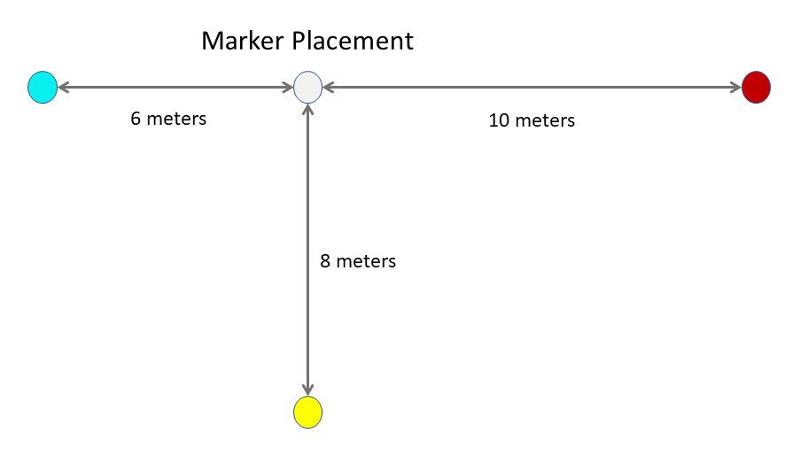

Space Pin Sample
The functionality demonstrated in the Space Pin example is also available in the main World Locked Physics Sample scene.
However, the Space Pin scene offers a simplified and more focused view of the Space Pin feature. It is intended to be closer to the inner workings of a real world application which needs to align a large object or objects with real world features.
It therefore lacks many of the options and runtime UX of the more general World Locked Physics Sample.
Default settings
The World Locking Tools Manager settings applied may be examined in the Unity Inspector by selecting the WorldLocking > WorldLockingManager node.
In particular, note that World Locking Tools' AutoSave and AutoLoad features are enabled. Therefore, after aligning the spheres and measuring beam to real world features, as described below, then subsequent session on startup will resume that alignment automatically.
To reset the sample to a clean state, uninstall it and re-deploy. There are, of course, APIs to reset to a clean slate from script, but these are omitted here for clarity. See IAlignmentManager.ClearAlignmentAnchors().
Also note that the demo enables automatic refit operations. See below.
Physical space setup
This sample contains 4 markers. To fully explore the sample, place physical markers in a space corresponding to the layout of the virtual markers.
NOTE: The layout of the virtual markers in the Unity scene may be altered to fit any physical space. There is nothing special about the default layout. However, seeing the benefits of the Space Pinning feature requires a considerable spread of the markers, with separations of at least a few meters.
The layout of the physical markers in the room should match the layout of the virtual markers in the Unity scene, as shown in this diagram:

Running the Sample
Startup
On startup for the first session, the origin of the Unity coordinate space will be at the head pose at startup.
Looking to the left and forward 6 meters will reveal a cyan sphere, with a cyan cube above it.
Looking to the right and back will show a red sphere and cube, 10 meters away.
Moving forward from the origin and looking back reveals a white sphere and cube. Eight meters beyond it is a yellow sphere and cube.
There are also beams of alternating colors running beneath the spheres. Their purpose will become clear during the walkthrough.
Aligning the world
Move to any one of the colored spheres. This walk-through will start with the red sphere.
Walk to the red sphere. The sphere may be grabbed from a distance using hand-rays in HL2, or gaze and pinch with HL1. On HL2, it may also be grabbed in hand.
Look around and find the marker placed in the physical room corresponding to the red sphere. Grab the virtual red sphere by one of the above methods and drag it to the red sphere's marker. Further adjust the sphere to align with the physical marker as well as possible.
Note that the other spheres have now moved as well. However, their orientation is unchanged. That is, the virtual world has been translated to put the red sphere on its marker, but the orientation of the world has not yet been affected.
Move to another sphere. For this walk-through the white sphere will be next.
Repeat the above procedure, moving the virtual white sphere to align with its physical marker.
Note that now the virtual space has been rotated as well as translated, so that the red, white, and cyan spheres are still in a line, with the yellow sphere on a perpendicular offset from the white sphere.
Verify that when near the white sphere, it is aligned with its physical marker. Walk to the red sphere and verify that it is aligned with its physical marker.
Now walk to a remaining sphere. This walk-through will proceed to the cyan sphere.
Note that while the cyan sphere is in line with the red and white spheres, it is not correctly positioned at its marker. The exact vector and magnitude of the error are device and even situation dependent, ut it is likely that it is near correctly on the red-white sphere line, but short of the physical marker.
Drag the cyan sphere to its correct alignment with the physical marker. Verify, by walking to each and examining them, that each of the 3 placed markers are now correctly aligned when in each one's proximity.
If desired, repeat this process for the final sphere.
Alternate manipulation mode
The above walk-through is based on the default configuration in the application, in which the orientation of the virtual space is implied by the relative positioning of the markers.
In an alternate mode, the orientation may be explicitly set by grabbing the spheres and rotating them about the Y-axis.
The default manipulation mode described above is generally much easier, because positioning of objects in virtual space tends to be much more precise than rotating them to a specific orientation.
Similarly, when using QR codes for automatic alignment, the position returned for a QR code marker tends to be much more reliable than the orientation.
However, some applications may have advance and specific knowledge of the desired orientation of space, which they may leverage using this second method.
To enable the explicit orientation method in the demo, simply disable the active Space Pin Orientable Manipulation components on the marker spheres in:
Content > Manipulation > Markers > CyanSphere/RedSphere/YellowSphere/GreySphere.
and enable the currently disabled Space Pin Manipulation components.
The suggested walk-through is then:
Position one of the spheres aligned with its physical marker, and orient it so that the other spheres are in the correct direction from it.
The other spheres will now be at incorrect distances, but along approximately the correct vector.
Move to the other spheres in turn and reposition each to align with it's physical marker. No further orientation changes should be required.
Examining the results
If a measuring tool, such as a tape measure, is available, this alignment can be further examined.
If the spheres were placed correctly, there should be zero error at each of the spheres.
The T-beam running beneath the spheres alternates colors at every meter. By measuring the deviation of the color changes in the beams with the meter marks in the measuring device, the error in the areas between Space Pins may be seen.
Refit operations
Automatic refit operations will most probably manifest as follows:
- After positioning one or more of the spheres, the virtual objects are aligned as expected.
- Subsequently, tracking is lost.
- Tracking resumes after moving to another physical area.
- The alignment from the first spheres is lost and has no effect (because they are in a different fragment).
- After moving about the new section of space (possibly positioning another sphere), the head moves back to the original space.
- A refit operation silently and automatically combines the original and new fragments.
- The alignment from the first spheres becomes effective again (because they are all in the same fragment now).